library("bayesrules")
library("bayesplot")
library("broom.mixed")
library("patchwork")
library("rstan")
library("rstanarm")
library("tidyverse")
knitr::opts_chunk$set(echo = TRUE)Data
San Francisco Rental Market
source: TidyTuesday
2022-07-05
Pennington, Kate (2018). Bay Area Craigslist Rental Housing Posts, 2000-2018. Retrieved from https://github.com/katepennington/historic_bay_area_craigslist_housing_posts/blob/master/clean_2000_2018.csv.zip.
- Craigslist listings
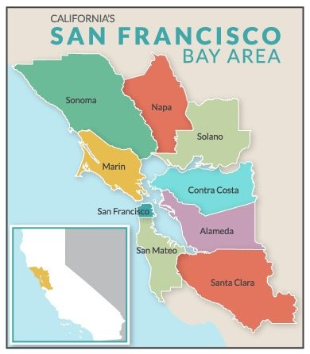
SF Rent Dataset
Response Variable
- Y: price (in US dollars)
Predictor Variables
Some possible predictable variables include
- area (sq feet of rental)
- number of bedrooms
- number of bathrooms
- county
- year
- latitude/longitude
Loading
rent_raw <- readr::read_csv('https://raw.githubusercontent.com/rfordatascience/tidytuesday/master/data/2022/2022-07-05/rent.csv')Wrangling
- filtered out lowest 5 percent and largest 5 percent of rentals (by price)
- filtered out lowest 5 percent and largest 5 percent of rentals (by area)
- at least year 2009 (i.e. decade from 2009 to 2018)
- 55143 observations
rent_df <- rent_raw |>
filter(price >= 800 & price <= 5000) |>
filter(sqft >= 500 & sqft <= 2500) |>
filter(year >= 2009)EDA
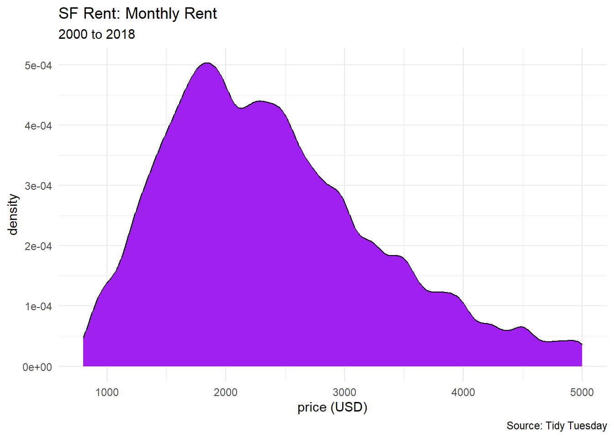
rent_df |>
ggplot(aes(x = price)) +
geom_density(fill = "purple") +
labs(title = "SF Rent: Monthly Rent",
subtitle = "2000 to 2018",
caption = "Source: Tidy Tuesday",
x = "price (USD)") +
theme_minimal()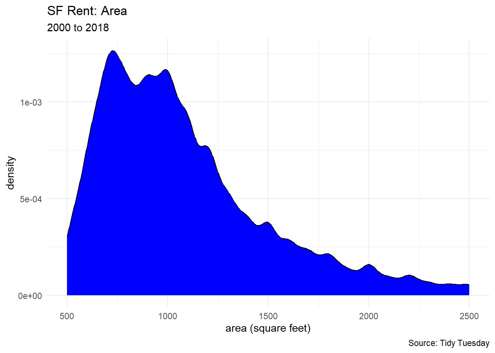
rent_df |>
ggplot(aes(x = sqft)) +
geom_density(fill = "blue") +
labs(title = "SF Rent: Area",
subtitle = "2000 to 2018",
caption = "Source: Tidy Tuesday",
x = "area (square feet)") +
theme_minimal()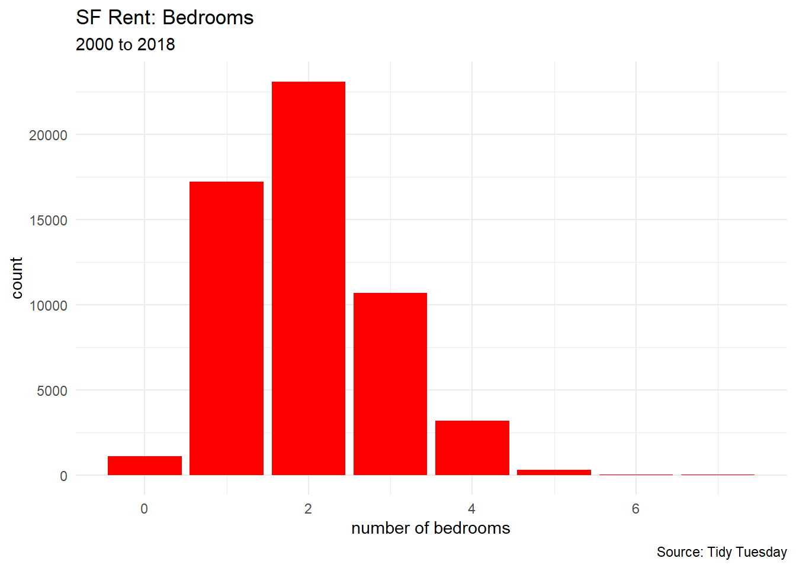
rent_df |>
ggplot(aes(x = beds)) +
geom_bar(fill = "red", stat = "count") +
labs(title = "SF Rent: Bedrooms",
subtitle = "2000 to 2018",
caption = "Source: Tidy Tuesday",
x = "number of bedrooms") +
theme_minimal()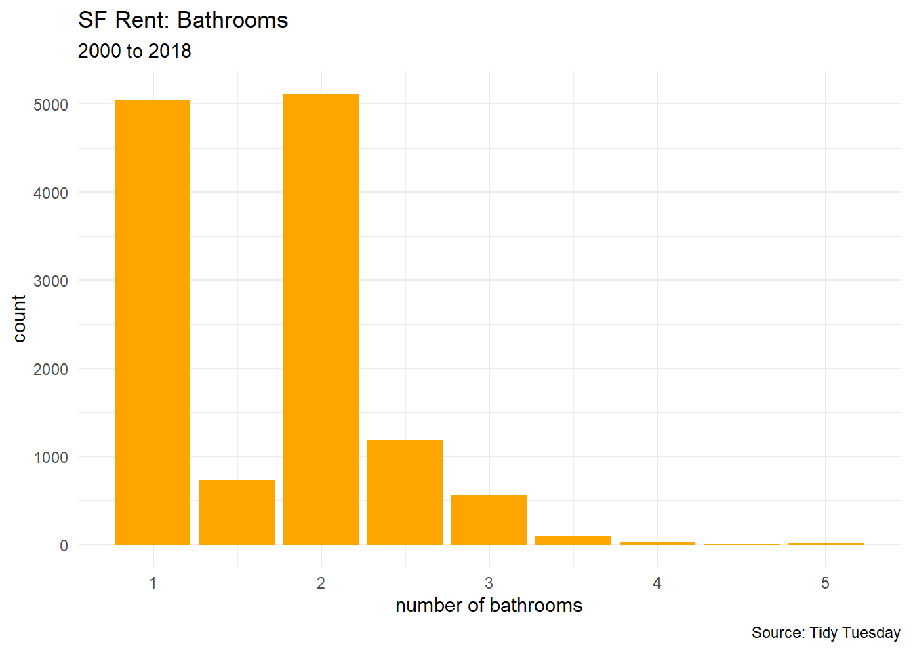
rent_df |>
ggplot(aes(x = baths)) +
geom_bar(fill = "orange", stat = "count") +
labs(title = "SF Rent: Bathrooms",
subtitle = "2000 to 2018",
caption = "Source: Tidy Tuesday",
x = "number of bathrooms") +
theme_minimal()
rent_df |>
ggplot(aes(x = year)) +
geom_bar(fill = "gray50", stat = "count") +
labs(title = "SF Rent Dataset",
subtitle = "2000 to 2018",
caption = "Source: Tidy Tuesday",
x = "year") +
scale_x_continuous(name = "year",
breaks = 2009:2018,
labels = as.character(2009:2018)) +
theme_minimal()Linear Regression
What is the expected monthly rent for a property of 1500 square feet in size?
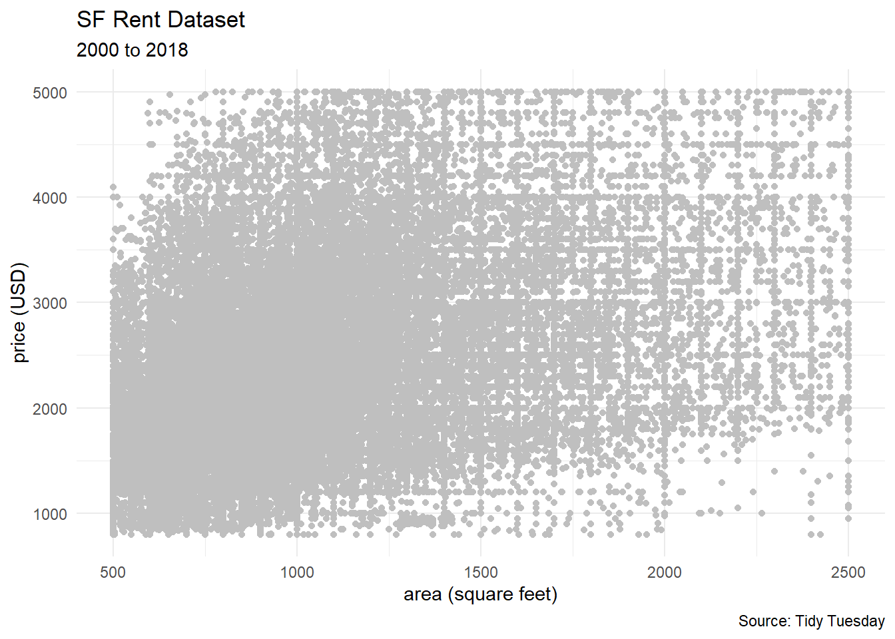
rent_df |>
ggplot(aes(x = sqft, y = price)) +
geom_point(color = "gray75") +
labs(title = "SF Rent Dataset",
subtitle = "2000 to 2018",
caption = "Source: Tidy Tuesday",
x = "area (square feet)",
y = "price (USD)") +
theme_minimal()\[y = a + bx\]
- y: response variable (price, in USD)
- x: area (in square feet)
- a: intercept
- b: slope coefficient
Where does the line go?

for(i in 1:25){
this_plot <- rent_df |>
ggplot(aes(x = sqft, y = price)) +
geom_point(color = "gray75") +
geom_abline(intercept = rnorm(1, 1500, 500),
slope = rnorm(1, 0.90, 0.25),
color = "red") +
labs(title = "Linear Regression",
subtitle = "Where does the line go?",
caption = "Source: Tidy Tuesday",
x = "area (square feet)",
y = "price (USD)") +
theme_minimal()
ggsave(filename = paste0("for_animations/lin_reg_plot_", i, ".png"),
plot = this_plot)
}
# then combined using the website https://ezgif.com/Method of Least Squares
Like our derivation of formulas for variance and standard deviation, scientists decided to square the residuals (focus on size of residuals, avoid positive versus negative signs). Let the total error be
\[E(a,b) = \displaystyle\sum_{i = 1}^{n} (y_{i} - \hat{y}_{i})^{2} = \displaystyle\sum_{i = 1}^{n} (y_{i} - a - bx_{i})^{2} \]
- The ``best-fit line’’ minimizes the error.
- To minimize the error, start by setting the partial derivatives equal to zero:
\[\displaystyle\frac{\partial E}{\partial a} = 0, \quad \displaystyle\frac{\partial E}{\partial b} = 0\]
Thankfully, the function \(E(a,b)\) is an elliptical paraboloid, so there is a global minimum at the critical point, and that minimum is found where
\[a = \displaystyle\frac{ (\sum y_{i})(\sum x_{i}^{2}) - (\sum x_{i})(\sum x_{i}y_{i}) }{ n\sum x_{i}^{2} - (\sum x_{i})^{2} }, \quad b = \displaystyle\frac{ n\sum x_{i}y_{i} - (\sum x_{i})(\sum y_{i}) }{ n\sum x_{i}^{2} - (\sum x_{i})^{2} }\]
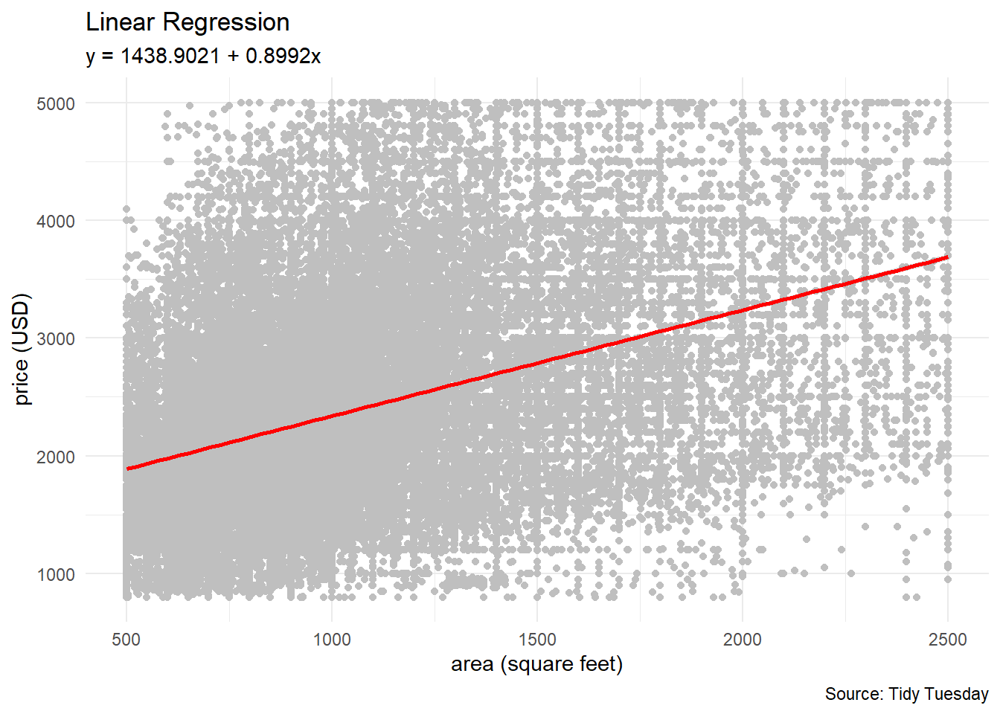
lin_fit <- lm(price ~ sqft, data = rent_df)
a <- lin_fit$coefficients[1]
b <- lin_fit$coefficients[2]
rent_df |>
ggplot(aes(x = sqft, y = price)) +
geom_point(color = "gray75") +
geom_smooth(method = "lm", color = "red") +
labs(title = "Linear Regression",
subtitle = paste0("y = ", round(a,4), " + ", round(b,4), "x"),
caption = "Source: Tidy Tuesday",
x = "area (square feet)",
y = "price (USD)") +
theme_minimal()As a rate of change, the coefficient \(b\) is interpretable.
\[b \approx 0.8992\]
For every one unit increase in square feet, the monthly rent increases by about 90 cents.

y_hat <- predict(lin_fit, newdata = data.frame(sqft = 1500))
rent_df |>
ggplot(aes(x = sqft, y = price)) +
geom_point(color = "gray75") +
geom_vline(xintercept = 1500, color = "blue", linewidth = 1) +
geom_smooth(method = "lm", color = "red", linewidth = 2) +
geom_hline(yintercept = y_hat, color = "purple", linewidth = 1) +
geom_point(x = 1500, y = y_hat, color = "purple", size = 5) +
labs(title = paste0("A 1500 sq ft house has an expected rent of $",
round(y_hat), "per month"),
subtitle = paste0("y = ", round(a,4), " + ", round(b,4), "(1500)"),
caption = "Source: Tidy Tuesday",
x = "area (square feet)",
y = "price (USD)") +
theme_minimal()We produced a point estimate
Can we obtain more predictive information?
- variability
- confidence
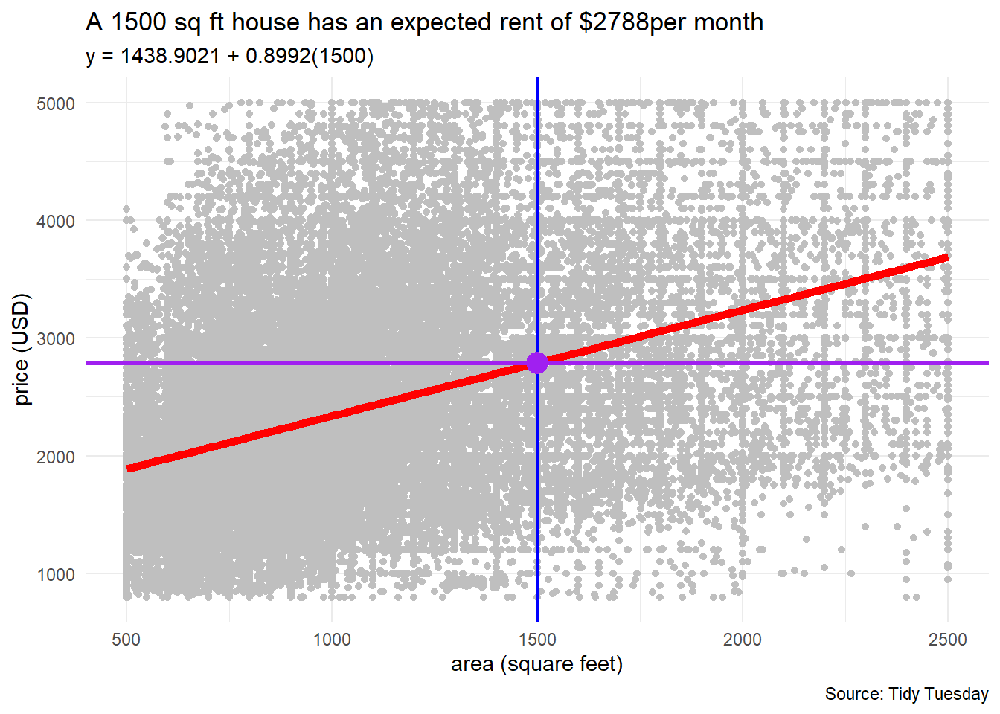
Normal Regression
Normal Normal
At first
\[\begin{array}{rcl} Y|\mu & \sim & N(\mu, \sigma^{2}) \\ \mu & \sim & N(\theta, \tau^{2}) \\ \end{array}\]
assumed known variability \(\sigma^{2}\)
Sigma
Standard deviation \(\sigma\) is another unknown parameter
\[\begin{array}{rcl} Y|\mu & \sim & N(\mu, \sigma^{2}) \\ \mu & \sim & N(\theta, \tau^{2}) \\ \sigma & \sim & \text{[some other model]} \end{array}\]
Local Mean
Instead of estimating a global mean
- \(\mu\): average price across all rental sizes
we can refine the models with a local mean
- \(\mu_{i} = \beta_{0} + \beta_{1}x_{i}\)
- specific to the rental size
Capturing Variability
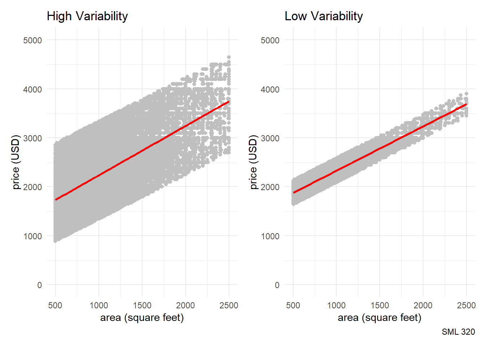
p1 <- rent_df |>
mutate(nearby = abs(price - (1439 + 0.899*sqft)) < 1000) |>
filter(nearby) |>
ggplot(aes(x = sqft, y = price)) +
geom_point(color = "gray75") +
geom_smooth(method = "lm", color = "red") +
labs(title = "High Variability",
x = "area (square feet)",
y = "price (USD)") +
theme_minimal() +
ylim(0, 5000)
p2 <- rent_df |>
mutate(nearby = abs(price - (1439 + 0.899*sqft)) < 250) |>
filter(nearby) |>
ggplot(aes(x = sqft, y = price)) +
geom_point(color = "gray75") +
geom_smooth(method = "lm", color = "red") +
labs(title = "Low Variability",
caption = "SML 320",
x = "area (square feet)",
y = "price (USD)") +
theme_minimal() +
ylim(0, 5000)
# patchwork
p1 + p2Parameter \(\sigma\) now represents variability from the local mean
\[\mu_{i} = \beta_{0} + \beta_{1}x_{i}\]
Normal Data Model Assumptions
\[Y|\beta_{0}, \beta_{1}, \sigma \sim \mu_{i} = \beta_{0} + \beta_{1}X_{i}\]
- Structure of the data: Accounting for predictor \(X\), the observed data \(Y_i\) on case \(i\) is independent of the observed data on any other case \(j\).
- Structure of the relationship: The typical \(Y\) outcome can be written as a linear function of predictor \(X\), \(\mu=\beta_{0} + \beta_{1}X\).
- Structure of the variability: At any value of predictor \(X\), the observed values of \(Y\) will vary normally around their average \(\mu\) with consistent standard deviation \(\sigma\).
Bayesian Linear Regression
\[\begin{array}{rcl} Y_{i}|\beta_{0}, \beta_{1}, \sigma & \sim & N(\mu_{i}, \sigma^{2}) \text{ with } \mu_{i} = \beta_{0} + \beta_{1}X_{1} \\ \beta_{0} & \sim & N(m_{0}, s_{0}^{2}) \\ \beta_{1} & \sim & N(m_{1}, s_{1}^{2}) \\ \sigma & \sim & \text{Exp}(\ell) \\ \end{array}\]
Tuning Priors
Domain expertise would help an analyst create some informative priors for the parameters. Otherwise, I will temporarily use haphazard code (below) to ascertain that
- rental prices tend to be between 900 and 1200 dollars per month
- for every one square foot increase in area, the rental price tends to increase between -5 and 47 cents
- rental prices tend to vary with a standard deviation of about 90 dollars
set.seed(320)
N <- 1000 # sample size
slopes <- rep(NA, N)
intercepts <- rep(NA, N)
ranges <- rep(NA, N)
centers <- rep(NA,N)
for(i in 1:N){
two_houses <- rent_df |>
slice_sample(n = 2) |>
select(price, sqft)
x1 <- two_houses[1,1] |> unlist()
x2 <- two_houses[2,1] |> unlist()
y1 <- two_houses[1,2] |> unlist()
y2 <- two_houses[2,2] |> unlist()
if(x1 == x2){
slopes[i] <- NA
intercepts[i] <- NA
}else{
slopes[i] <- (y2 - y1) / (x2 - x1)
intercepts[i] <- y1 - slopes[i]*x1
}
ranges[i] <- abs(y2 - y1)
centers[i] <- (y1 + y2) / 2
}
print("Intercept estimates")[1] "Intercept estimates"print(round(quantile(intercepts, c(0.3, 0.5, 0.7), na.rm = TRUE))) 30% 50% 70%
6 547 1142 print("Slope estimates")[1] "Slope estimates"print(quantile(slopes, c(0.3, 0.5, 0.7), na.rm = TRUE)) 30% 50% 70%
-0.0548437 0.1613792 0.4677822 print("Deviation estimates")[1] "Deviation estimates"print(round(quantile(ranges/4, c(0.3, 0.5, 0.7), na.rm = TRUE)))30% 50% 70%
43 88 142 print("Centered intercept estimates")[1] "Centered intercept estimates"print(round(quantile(centers, c(0.3, 0.5, 0.7), na.rm = TRUE))) 30% 50% 70%
901 1041 1203 p1 <- bayesrules::plot_normal(mean = 547, sd = 1142-547) +
labs(title = "intercept", x = "beta_0", y = "") +
theme_minimal()
p2 <- bayesrules::plot_normal(mean = 0.16, sd = 0.47-0.16) +
labs(title = "slope", x = "beta_1", y = "") +
theme_minimal()
p3 <- bayesrules::plot_gamma(shape = 1, rate = 1/88) +
labs(title = "deviation", x = "sigma", y = "") +
theme_minimal()
# patchwork
p1 + p2 + p3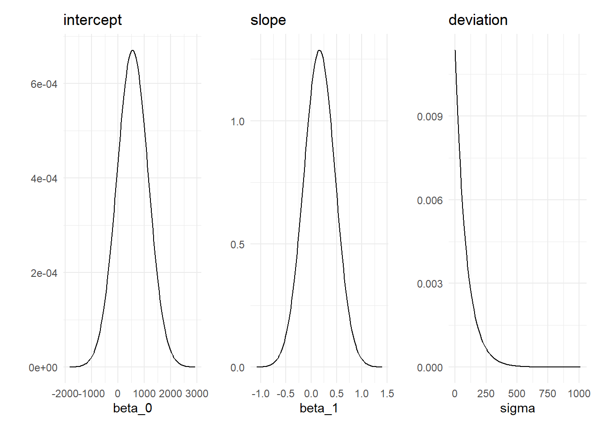
\[\begin{array}{rcl} Y_{i}|\beta_{0}, \beta_{1}, \sigma & \sim & N(\mu_{i}, \sigma^{2}) \text{ with } \mu_{i} = \beta_{0} + \beta_{1}X_{1} \\ \beta_{0} & \sim & N(547, 597^{2}) \\ \beta_{1} & \sim & N(0.16, 0.31^{2}) \\ \sigma & \sim & \text{Exp}(1/88) \\ \end{array}\]
for(i in 1:25){
this_plot <- rent_df |>
ggplot(aes(x = sqft, y = price)) +
geom_point(color = "white") +
geom_abline(intercept = rnorm(1, 547, 597),
slope = rnorm(1, 0.16, 0.31),
color = "red") +
labs(title = "Prior Models",
subtitle = "Simulation Space",
caption = "SML 320",
x = "area (square feet)",
y = "price (USD)") +
theme_minimal()
ggsave(filename = paste0("for_animations/lin_sim_plot_", i, ".png"),
plot = this_plot)
}
# then combined using the website https://ezgif.com/rstan
rent_stan_model <- "
data {
int<lower = 0> n;
vector[n] Y;
vector[n] X;
}
parameters {
real beta0;
real beta1;
real<lower = 0> sigma;
}
model {
Y ~ normal(beta0 + beta1 * X, sigma);
beta0 ~ normal(547, 597);
beta1 ~ normal(0.16, 0.31);
sigma ~ exponential(0.01136364);
}
"time_start <- Sys.time()
rent_df_for_stan <- rent_df |>
slice_sample(prop = 0.05)
rent_stan_sim <-
stan(model_code = rent_stan_model,
data = list(n = nrow(rent_df_for_stan),
Y = rent_df_for_stan$price,
X = rent_df_for_stan$sqft),
chains = 4, iter = 5000*2, refresh = 0, seed = 320)
time_end <- Sys.time()
time_end - time_startTime difference of 58.85536 secsbayesplot::mcmc_trace(rent_stan_sim,
pars = c("beta0", "beta1", "sigma"),
size = 0.1) +
labs(title = "MCMC Traces")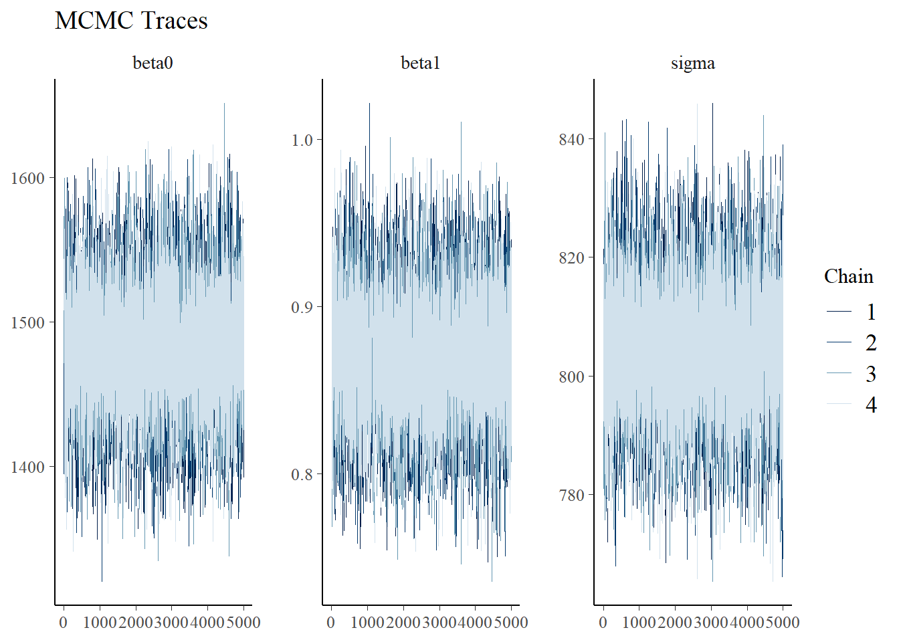
bayesplot::mcmc_dens_overlay(rent_stan_sim,
pars = c("beta0", "beta1", "sigma")) +
labs(title = "Density Plots")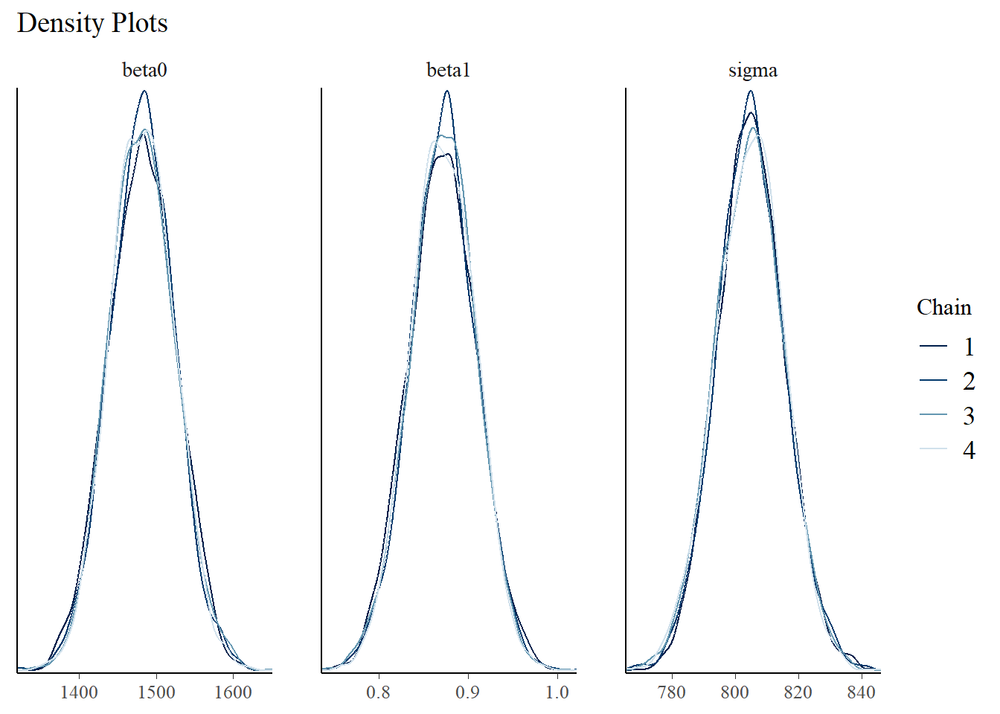
bayesplot::mcmc_acf(rent_stan_sim,
pars = c("beta0", "beta1", "sigma")) +
labs(title = "Autocorrelations")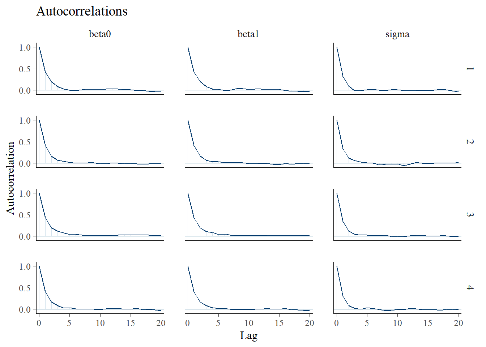
bayesplot::neff_ratio(rent_stan_sim,
pars = c("beta0", "beta1", "sigma")) beta0 beta1 sigma
0.3692006 0.3690437 0.4980528 bayesplot::rhat(rent_stan_sim,
pars = c("beta0", "beta1", "sigma")) beta0 beta1 sigma
0.9999020 0.9998856 1.0001496 broom.mixed::tidy(rent_stan_sim,
effects = c("fixed", "aux"),
conf.int = TRUE, conf.level = 0.80) |>
mutate_if(is.numeric, round, digits = 4)# A tibble: 3 × 5
term estimate std.error conf.low conf.high
<chr> <dbl> <dbl> <dbl> <dbl>
1 beta0 1482. 42.5 1428. 1537.
2 beta1 0.872 0.0371 0.824 0.919
3 sigma 805. 10.8 791. 819. rstanarm
The rstanarm package provides many convenient pre-defined Bayesian models for applied regression models.
Centered Intercept
Caution: the rstanarm package will estimate the centered intercept instead of the usual intercept.
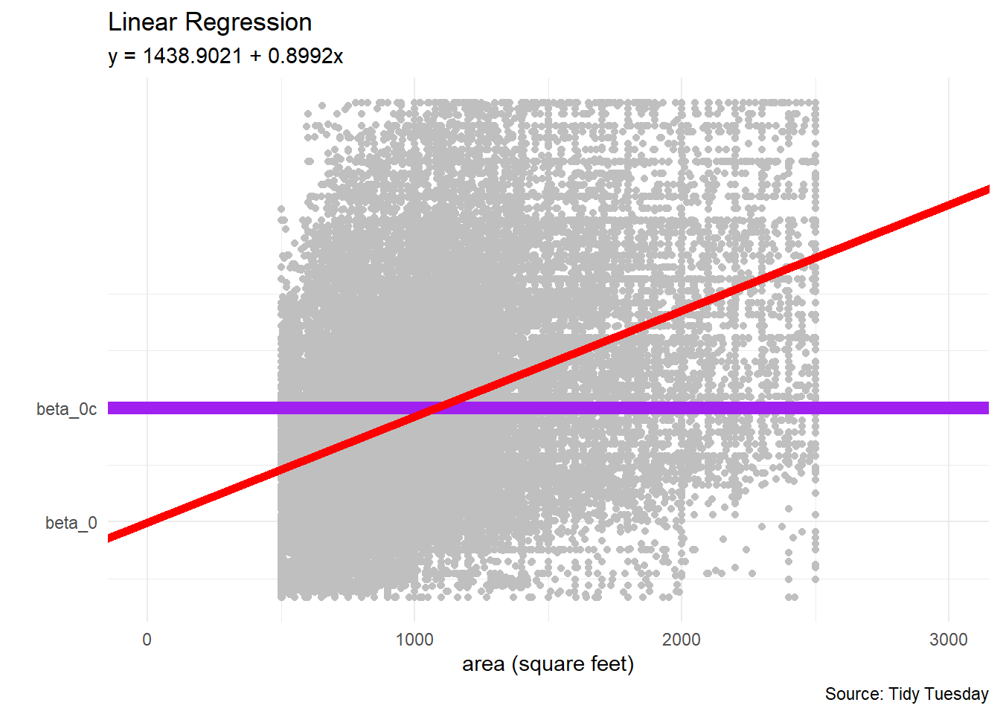
lin_fit <- lm(price ~ sqft, data = rent_df)
a <- lin_fit$coefficients[1]
b <- lin_fit$coefficients[2]
y_bar <- mean(rent_df$price, na.rm = TRUE)
rent_df |>
ggplot(aes(x = sqft, y = price)) +
geom_point(color = "gray75") +
geom_hline(yintercept = y_bar, color = "purple", linewidth = 3) +
geom_abline(intercept = a, slope = b, color = "red", linewidth = 2) +
labs(title = "Linear Regression",
subtitle = paste0("y = ", round(a,4), " + ", round(b,4), "x"),
caption = "Source: Tidy Tuesday",
x = "area (square feet)",
y = "price (USD)") +
scale_y_continuous(name = "",
breaks = c(a, y_bar),
labels = c("beta_0", "beta_0c")) +
theme_minimal() +
xlim(0, 3000)time_start <- Sys.time()
rent_df_for_stan <- rent_df |>
slice_sample(prop = 0.05)
rent_stanarm_sim <- stan_glm(price ~ sqft, data = rent_df_for_stan,
family = gaussian,
prior_intercept = normal(1041, 162),
prior = normal(547, 597),
prior_aux = exponential(1/88),
chains = 4, iter = 5000*2, refresh = 0, seed = 84735)
time_end <- Sys.time()
time_end - time_startTime difference of 22.73225 secsbayesplot::mcmc_trace(rent_stanarm_sim, size = 0.1) +
labs(title = "MCMC Traces")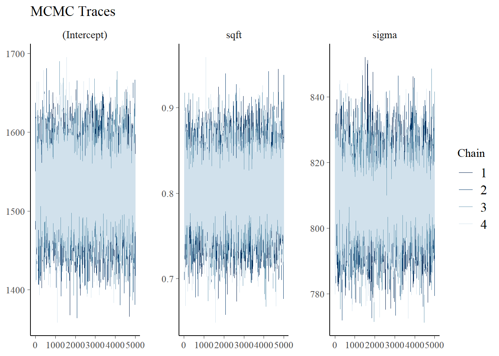
bayesplot::mcmc_dens_overlay(rent_stanarm_sim) +
labs(title = "Density Plots")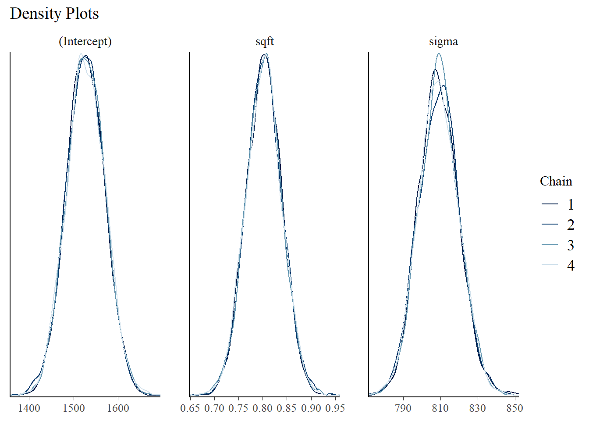
bayesplot::mcmc_acf(rent_stanarm_sim) +
labs(title = "Autocorrelations")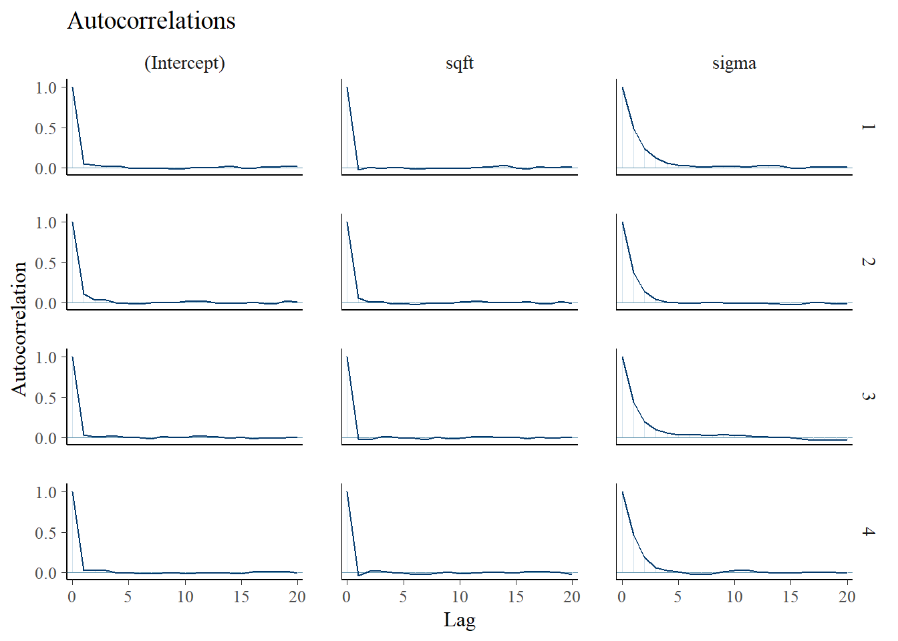
bayesplot::neff_ratio(rent_stanarm_sim)(Intercept) sqft sigma
0.81340 0.97695 0.37455 bayesplot::rhat(rent_stanarm_sim)(Intercept) sqft sigma
0.9999319 0.9998695 1.0001440 broom.mixed::tidy(rent_stanarm_sim,
effects = c("fixed", "aux"),
conf.int = TRUE, conf.level = 0.80) |>
mutate_if(is.numeric, round, digits = 4)# A tibble: 4 × 5
term estimate std.error conf.low conf.high
<chr> <dbl> <dbl> <dbl> <dbl>
1 (Intercept) 1527. 42.9 1472. 1582.
2 sqft 0.803 0.0367 0.755 0.850
3 sigma 809. 10.8 795. 823.
4 mean_PPD 2390. 21.6 2362. 2417. rstan
# A tibble: 3 × 3
term estimate std.error
<chr> <dbl> <dbl>
1 beta0 1482. 42.5
2 beta1 0.872 0.0371
3 sigma 805. 10.8 rstanarm
# A tibble: 4 × 3
term estimate std.error
<chr> <dbl> <dbl>
1 (Intercept) 1527. 42.9
2 sqft 0.803 0.0367
3 sigma 809. 10.8
4 mean_PPD 2390. 21.6 Autoscale
- In this scaling process,
rstanarmseeks to identify weakly informative priors - It does not consider the relationship among these variables.
time_start <- Sys.time()
rent_df_for_stan <- rent_df |>
slice_sample(prop = 0.05)
rent_autoscale_sim <- stan_glm(price ~ sqft, data = rent_df_for_stan,
family = gaussian,
prior_intercept = normal(1041, 162, autoscale = TRUE),
prior = normal(547, 597, autoscale = TRUE),
prior_aux = exponential(1/88, autoscale = TRUE),
chains = 4, iter = 5000*2, refresh = 0, seed = 84735)
time_end <- Sys.time()
time_end - time_startTime difference of 30.99705 secsbayesplot::mcmc_trace(rent_autoscale_sim, size = 0.1) +
labs(title = "MCMC Traces")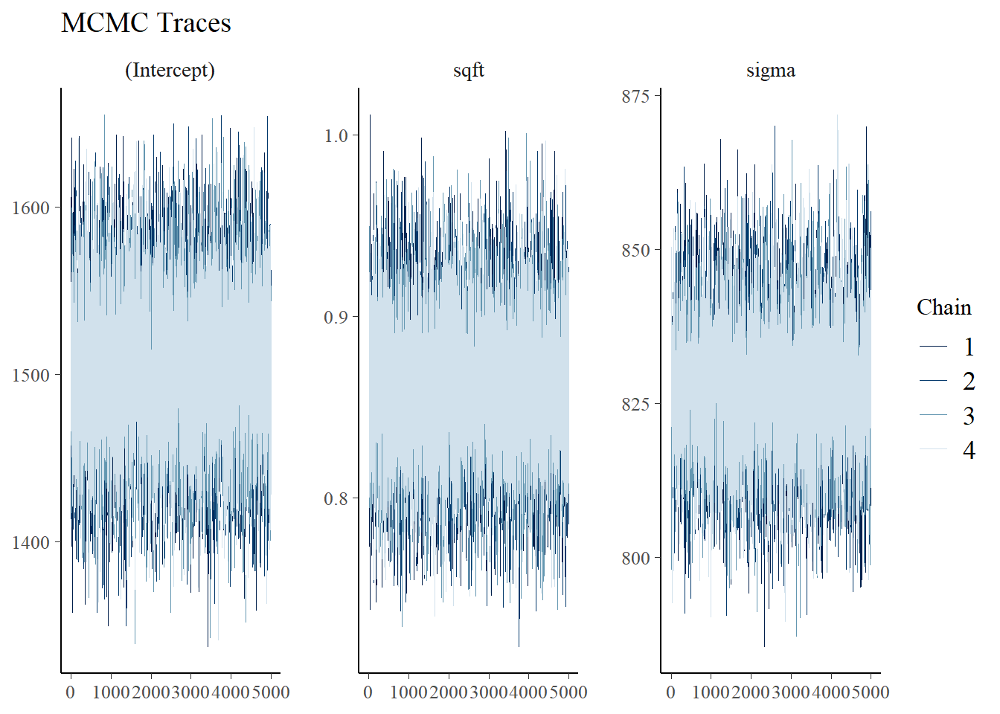
bayesplot::mcmc_dens_overlay(rent_autoscale_sim) +
labs(title = "Density Plots")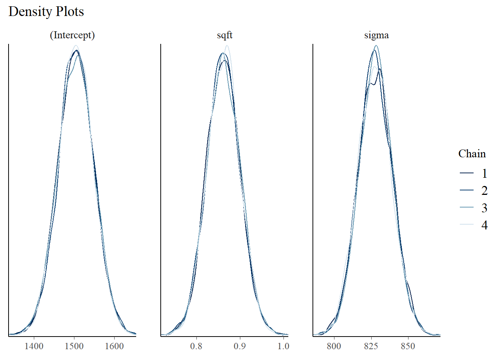
bayesplot::mcmc_acf(rent_autoscale_sim) +
labs(title = "Autocorrelations")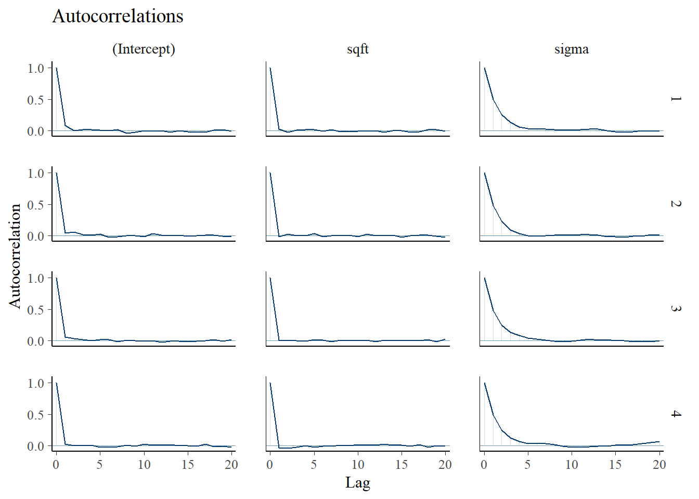
bayesplot::neff_ratio(rent_autoscale_sim)(Intercept) sqft sigma
0.83305 1.00865 0.33455 bayesplot::rhat(rent_autoscale_sim)(Intercept) sqft sigma
0.9999997 1.0000346 1.0006433 rstanarm::prior_summary(rent_autoscale_sim)Priors for model 'rent_autoscale_sim'
------
Intercept (after predictors centered)
Specified prior:
~ normal(location = 1041, scale = 162)
Adjusted prior:
~ normal(location = 1041, scale = 146074)
Coefficients
Specified prior:
~ normal(location = 547, scale = 597)
Adjusted prior:
~ normal(location = 547, scale = 1294)
Auxiliary (sigma)
Specified prior:
~ exponential(rate = 0.011)
Adjusted prior:
~ exponential(rate = 1.3e-05)
------
See help('prior_summary.stanreg') for more detailsbroom.mixed::tidy(rent_autoscale_sim,
effects = c("fixed", "aux"),
conf.int = TRUE, conf.level = 0.80) |>
mutate_if(is.numeric, round, digits = 4)# A tibble: 4 × 5
term estimate std.error conf.low conf.high
<chr> <dbl> <dbl> <dbl> <dbl>
1 (Intercept) 1505. 44.0 1447. 1561.
2 sqft 0.862 0.038 0.813 0.911
3 sigma 828. 11.4 813. 842.
4 mean_PPD 2444. 22.2 2416. 2472. rstanarm
# A tibble: 4 × 3
term estimate std.error
<chr> <dbl> <dbl>
1 (Intercept) 1527. 42.9
2 sqft 0.803 0.0367
3 sigma 809. 10.8
4 mean_PPD 2390. 21.6 autoscale
# A tibble: 4 × 3
term estimate std.error
<chr> <dbl> <dbl>
1 (Intercept) 1505. 44.0
2 sqft 0.862 0.038
3 sigma 828. 11.4
4 mean_PPD 2444. 22.2 Posterior Distribution
Many Models
rent_model_df <- as.data.frame(rent_autoscale_sim)
# nrow(rent_model_df)
# 20000 models from 20000 chains
head(rent_model_df) (Intercept) sqft sigma
1 1605.731 0.8024525 823.1324
2 1595.615 0.8117000 822.9240
3 1429.658 0.9107199 835.7474
4 1536.464 0.8128524 835.6783
5 1463.692 0.8782975 835.7370
6 1476.271 0.8683633 833.1336Many Lines

for(i in 1:25){
beta_0 <- rent_model_df$`(Intercept)`[i]
beta_1 <- rent_model_df$sqft[i]
this_plot <- rent_df |>
ggplot(aes(x = sqft, y = price)) +
geom_point(color = "gray75") +
geom_vline(xintercept = 1500, color = "blue", linewidth = 3) +
geom_abline(intercept = beta_0, slope = beta_1,
color = "red", linewidth = 3) +
geom_point(x = 1500, y = beta_0 + beta_1*1500,
color = "purple", size = 5) +
labs(title = "Bayesian Regression",
subtitle = "What is the expected monthly rent for a property of 1500 square feet in size?",
caption = "Source: Tidy Tuesday",
x = "area (square feet)",
y = "price (USD)") +
theme_minimal()
ggsave(filename = paste0("for_animations/bayes_reg_plot_", i, ".png"),
plot = this_plot)
}
# then combined using the website https://ezgif.com/Evidence
Do we have posterior evidence that there is a positive relationship between area and price?
\[\beta_{1} > 0?\]
It appears that all of our slopes are positive.
The credible interval does not contain zero.
broom.mixed::tidy(rent_autoscale_sim,
effects = c("fixed", "aux"),
conf.int = TRUE, conf.level = 0.80) |>
mutate_if(is.numeric, round, digits = 4)# A tibble: 4 × 5
term estimate std.error conf.low conf.high
<chr> <dbl> <dbl> <dbl> <dbl>
1 (Intercept) 1505. 44.0 1447. 1561.
2 sqft 0.862 0.038 0.813 0.911
3 sigma 828. 11.4 813. 842.
4 mean_PPD 2444. 22.2 2416. 2472. \[P(\beta_{1} > 0 | \vec{y}) \approx 1\]
rent_model_df |>
mutate(slope_exceeds_0 = sqft > 0) |>
janitor::tabyl(slope_exceeds_0) |>
janitor::adorn_totals() slope_exceeds_0 n percent
TRUE 20000 1
Total 20000 1Posterior Prediction
Posterior Predictive Model
\[Y_{\text{new}} | \beta_{0}, \beta_{1}, \sigma \sim N(\mu, \sigma^{2}) \text{ with } \mu = \beta_{0} + \beta_{1}*1500\]
set.seed(320)
rent_predict_df <- rent_model_df |>
mutate(mu = `(Intercept)` + sqft*1500,
y_new = rnorm(20000, mean = mu, sd = sigma))Many Models
head(rent_predict_df) (Intercept) sqft sigma mu y_new
1 1605.731 0.8024525 823.1324 2809.410 1096.676
2 1595.615 0.8117000 822.9240 2813.165 1835.540
3 1429.658 0.9107199 835.7474 2795.738 2218.671
4 1536.464 0.8128524 835.6783 2755.743 3398.422
5 1463.692 0.8782975 835.7370 2781.139 2335.670
6 1476.271 0.8683633 833.1336 2778.816 2966.288Intervals
rent_predict_df |>
summarize(lower_mu = quantile(mu, 0.025),
upper_mu = quantile(mu, 0.975),
lower_new = quantile(y_new, 0.025),
upper_new = quantile(y_new, 0.975)) lower_mu upper_mu lower_new upper_new
1 2753.982 2841.034 1153.325 4437.741- typical rent: (2754, 2841)
- posterior prediction interval: (1153, 4437)
Averaging
rent_predict_df |>
ggplot(aes(x = mu)) +
geom_density(fill = "purple") +
labs(title = "Typical Rent",
subtitle = "distribution for mu") +
theme_minimal()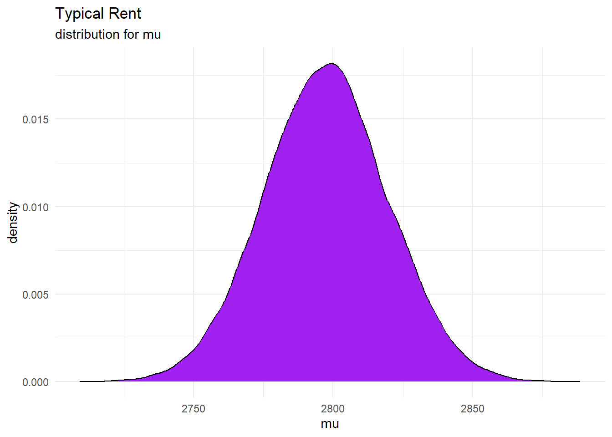
Distributions
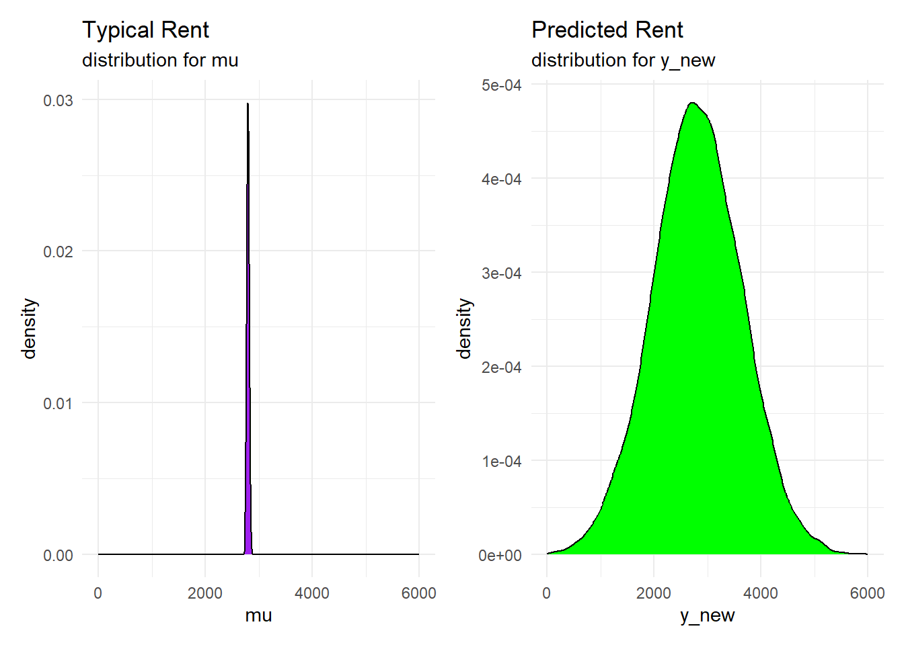

Credible Prediction
quantile(rent_predict_df$y_new, c(0.025, 0.975)) 2.5% 97.5%
1153.325 4437.741 - The rent for a 1500 sq ft property will probably be in between 1153 and 4438 dollars per month.
- We can get Bayesian regression models running quickly with the
rstanarmpackage and itsautoscalecapabilities - The posterior predictive model accounts not only for the average rent on a 1500 sq ft property, but also the individual variability from that average.
Footnotes
- brms guide to visualizing posterior distributions by Andrew Heiss
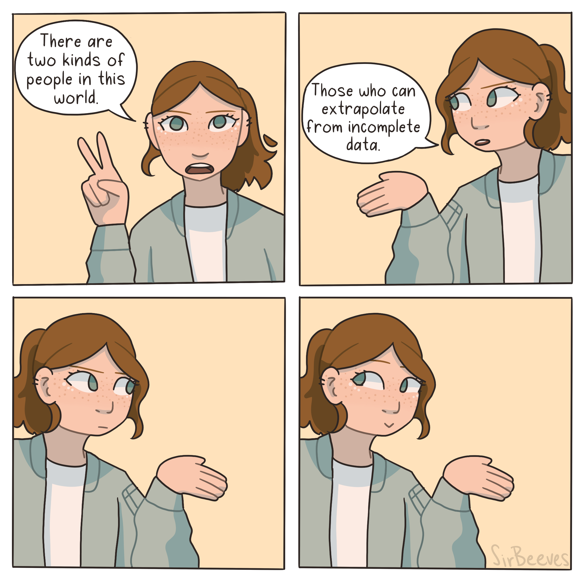
Session Info
sessionInfo()R version 4.3.2 (2023-10-31 ucrt)
Platform: x86_64-w64-mingw32/x64 (64-bit)
Running under: Windows 10 x64 (build 19045)
Matrix products: default
locale:
[1] LC_COLLATE=English_United States.utf8
[2] LC_CTYPE=English_United States.utf8
[3] LC_MONETARY=English_United States.utf8
[4] LC_NUMERIC=C
[5] LC_TIME=English_United States.utf8
time zone: America/New_York
tzcode source: internal
attached base packages:
[1] stats graphics grDevices utils datasets methods base
other attached packages:
[1] rstanarm_2.21.4 Rcpp_1.0.11 broom.mixed_0.2.9.4
[4] lubridate_1.9.3 forcats_1.0.0 stringr_1.5.1
[7] dplyr_1.1.4 purrr_1.0.2 readr_2.1.5
[10] tidyr_1.3.1 tibble_3.2.1 ggplot2_3.4.3
[13] tidyverse_2.0.0 rstan_2.32.5 StanHeaders_2.32.5
[16] patchwork_1.1.2 janitor_2.2.0 infer_1.0.4
[19] bayesplot_1.10.0 bayesrules_0.0.2
loaded via a namespace (and not attached):
[1] gridExtra_2.3 inline_0.3.19 rlang_1.1.1
[4] magrittr_2.0.3 furrr_0.3.1 snakecase_0.11.0
[7] matrixStats_1.0.0 e1071_1.7-13 compiler_4.3.2
[10] mgcv_1.9-0 loo_2.6.0 callr_3.7.3
[13] vctrs_0.6.5 reshape2_1.4.4 pkgconfig_2.0.3
[16] crayon_1.5.2 fastmap_1.1.1 backports_1.4.1
[19] ellipsis_0.3.2 labeling_0.4.3 utf8_1.2.4
[22] threejs_0.3.3 promises_1.2.1 rmarkdown_2.24
[25] tzdb_0.4.0 markdown_1.8 ps_1.7.5
[28] nloptr_2.0.3 xfun_0.40 jsonlite_1.8.7
[31] later_1.3.1 broom_1.0.5 parallel_4.3.2
[34] prettyunits_1.2.0 R6_2.5.1 dygraphs_1.1.1.6
[37] stringi_1.8.3 parallelly_1.36.0 boot_1.3-28.1
[40] knitr_1.43 zoo_1.8-12 base64enc_0.1-3
[43] httpuv_1.6.11 Matrix_1.6-1.1 splines_4.3.2
[46] igraph_1.4.3 timechange_0.3.0 tidyselect_1.2.0
[49] rstudioapi_0.15.0 yaml_2.3.8 codetools_0.2-19
[52] miniUI_0.1.1.1 curl_5.0.2 processx_3.8.1
[55] listenv_0.9.0 pkgbuild_1.4.0 lattice_0.21-9
[58] plyr_1.8.8 withr_3.0.0 shiny_1.7.5
[61] groupdata2_2.0.2 evaluate_0.21 future_1.32.0
[64] survival_3.5-7 proxy_0.4-27 RcppParallel_5.1.7
[67] xts_0.13.1 pillar_1.9.0 DT_0.28
[70] stats4_4.3.2 shinyjs_2.1.0 generics_0.1.3
[73] hms_1.1.3 rstantools_2.3.1 munsell_0.5.0
[76] scales_1.2.1 minqa_1.2.5 globals_0.16.2
[79] gtools_3.9.4 xtable_1.8-4 class_7.3-22
[82] glue_1.6.2 tools_4.3.2 shinystan_2.6.0
[85] lme4_1.1-33 colourpicker_1.2.0 grid_4.3.2
[88] QuickJSR_1.1.3 crosstalk_1.2.0 colorspace_2.1-0
[91] nlme_3.1-163 cli_3.6.1 fansi_1.0.6
[94] V8_4.3.0 gtable_0.3.4 digest_0.6.33
[97] farver_2.1.1 htmlwidgets_1.6.2 htmltools_0.5.6
[100] lifecycle_1.0.4 mime_0.12 shinythemes_1.2.0
[103] MASS_7.3-60